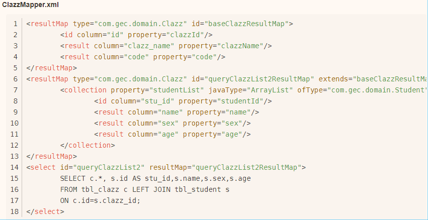

小课堂
分享人：辛家印
1.背景介绍
2.知识剖析
3.常见问题
4.解决方案
5.编码实战
6.扩展思考
7.参考文献
8.更多讨论
一对一、一对多、多对多
(1) 嵌套结果: 使用嵌套结果映射来处理重复的联合结果的子集
关键字：association
作用：针对pojo对象属性的映射
property：pojo的属性名
javaType：pojo类名
(2) 嵌套查询：通过执行另外一个SQL映射语句来返回预期的复杂类型
column="引入执行另外定制sql方法的参数值（外键）"
select="执行定制sql方法名"
(1) 嵌套结果:
(2) 嵌套查询：
商品表、订单表之间就是以多对多关联
商品与订单的关系表
描述多对多的数据表实现
(1)商品pojo:
(2)商品表映射：
(3)订单pojo：
(4)订单表映射：
1、sql语句过于复杂
优点：高内聚、低耦合
缺点：逻辑都保存在mapper里，复杂的逻辑难以维护
经常维护的项目使用建立关联表的方式实现多对多
感谢观看,如有出错,恳请指正